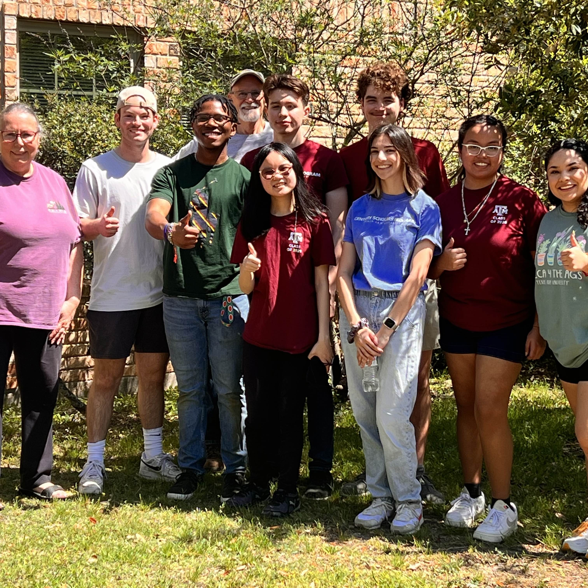
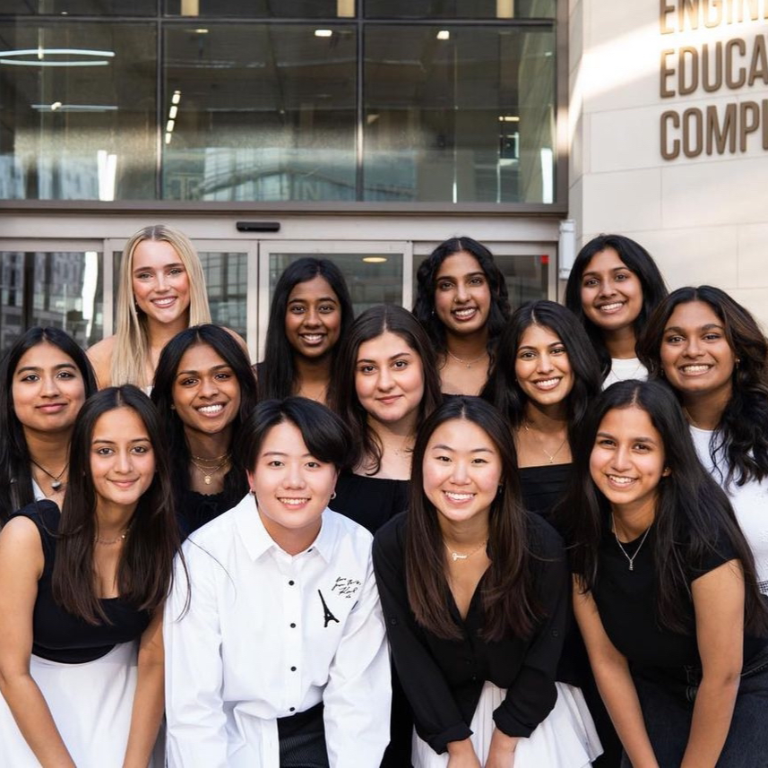

How do I give back to my community?
Century Scholars |
In Century Scholars, I volunteer at least 5 hours every semester in the Bryan/College Station areas! My services range from packing Christmas gifts at Salvation Army, volunteering at animal shelters, and doing yard and housework for elderly people. |
AWiCS |
At Aggie Women in Computer Science, I signed up to be a mentor through the Rubies program! Here, I was paired with an underclassman student either looking to enter or new to the TAMU Computer Science Program. I would spend time with my mentees and guide them through registration processes, what classes and programs I recommended, and just be a friend! |
Learn in Shelter
|
From 2020 until 2022, I was a volunteer math tutor for Learn in Shelter! Here, I was paired with a third-grade student with learning disabilities who was struggling with math. I would develop weekly lesson plans, communicate with his parent, and hold weekly math lessons. I accumulated over 80 volunteer hours through this program, including the time taken to develop lesson plans. |